作者：创世魂
● 帮助说明
CEF浏览器位于“WEB浏览器”模块中，添加此模块才能使用CEF浏览器。
学习本教程需要您稍微了解一些JavaScript和HTML网页相关知识。
不了解网页知识也没关系，通过本教程的学习依然可以实现一些简单的网页交互效果。
● 说明
通过学习本篇教程可实现通过操作网页元素来操作视窗的窗口组件。
● 准备如下界面
打开界面设计器后，在窗口中放入“编辑框”和“CEF浏览器”两个组件
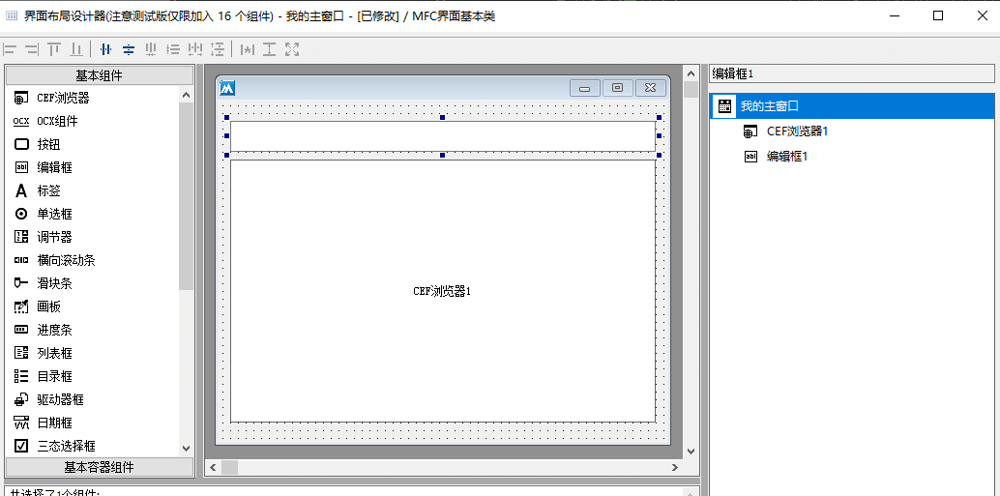
准备如下所示的HTML代码：
<html>
<head>
<meta http-equiv="Content-Type" content="text/html; charset=utf-8" />
<title>测试</title>
</head>
<body>
<a onclick="action('BianJi')">操作编辑框</a>
<a onclick="action('XiXinKuang')">弹出火山信息框</a>
</body>
</html>
将准备好的HTML代码保存成后缀名为html的文件，在视窗代码使用“@视窗.附属文件”引入此文件。
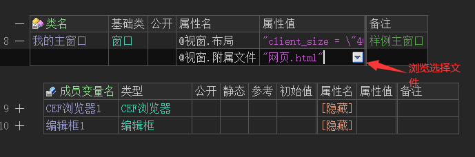
代码编写如下图：
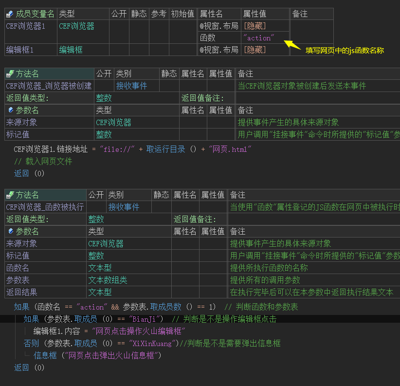
运行效果如下图：
最终可以看到，当网页被点击后将会操作火山组件。
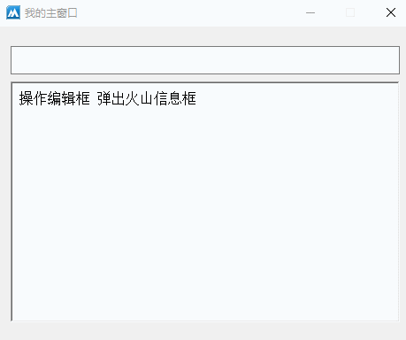
● 说明
通过学习本篇教程可实现通过操作窗口组件来控制网页元素。
本篇将主要学习：隐藏/显示元素，点击网页元素，网页编辑框元素写文本。
● 网页元素ID查找方法
1、在浏览器中寻找百度输入框元素ID。
以微软edge浏览器为例，右键点击“检查”可以进入开发者模式，如果非edge浏览器可使用快捷键f12进入。
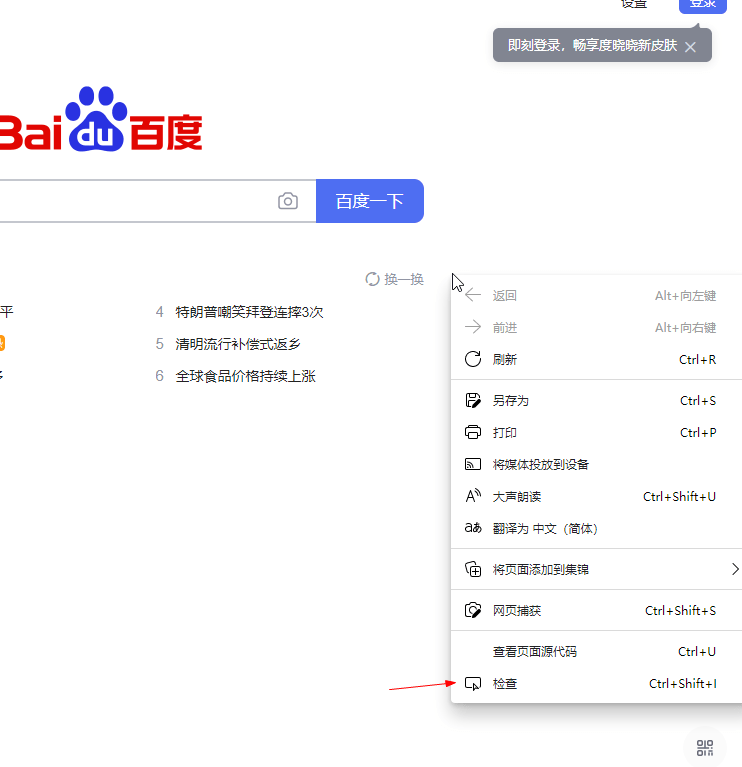
点击“鼠标”图标，可以快速定位百度输入框所处html代码。
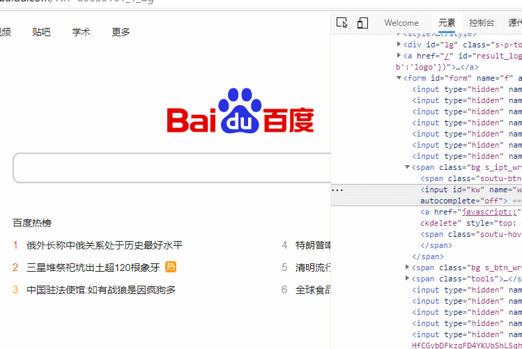
定位输入框后找到id属性，ID属性所对应的值就是网页元素ID，百度输入框的元素ID是“form”。
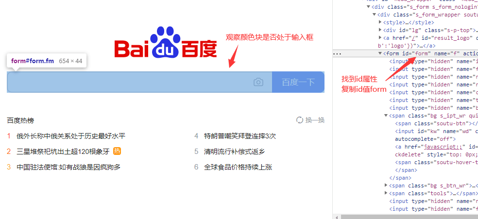
● 隐藏/显示网页元素
打开界面设计器后，在窗口中放入“按钮”和“CEF浏览器”两个组件
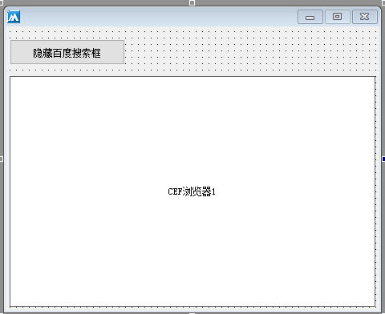
准备如下所示的javascript代码：
javascript:document.getElementById("元素ID").style.display="none";
上述代码的作用是用于隐藏指定ID的网页元素，将代码中的“none”修改成“block”就可以实现将隐藏后的元素显示出来。
根据提供的javascript代码进行简单封装：
调用“CEF浏览器1.取主框架 ().执行JS脚本()”就可以在网页中执行javascript脚本，在使用时需要注意引号转义的问题。
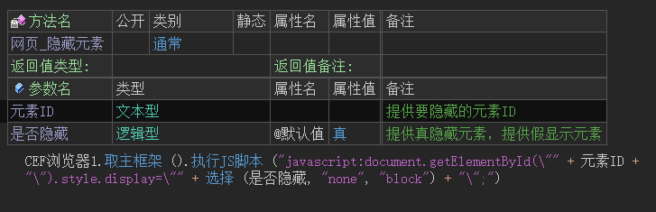
代码编写如下图：
1、调用“链接地址”属性跳转百度首页。
2、按钮被点击后，判断按钮标题来执行显示或者隐藏百度输入框。
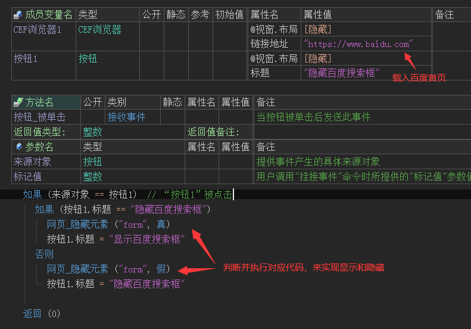
运行效果如下图：
最终可以看到，百度输入框可以随意的隐藏和显示。
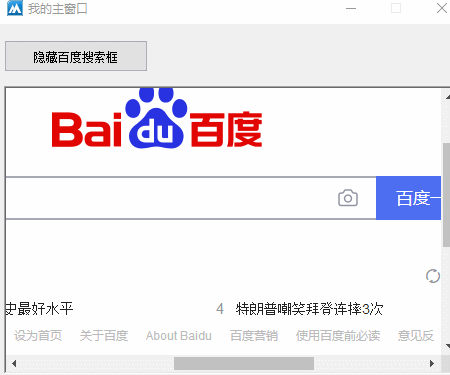
● 网页编辑框写内容
打开界面设计器后，在窗口中放入“按钮”，“编辑框”和“CEF浏览器”三个组件
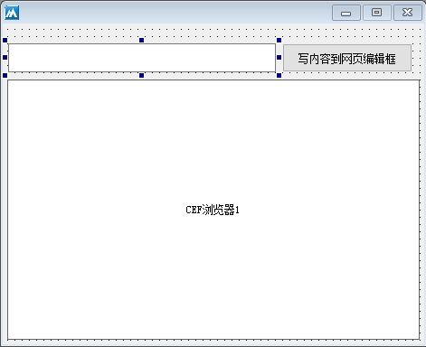
准备如下所示的javascript代码：
javascript:document.getElementById("元素ID").value="要写入的内容";
上述代码的作用可以在指定元素ID的网页编辑框内写入指定文本。
代码编写如下图：
1、根据提供的javascript代码进行简单封装。
2、调用“CEF浏览器1.取主框架 ().执行JS脚本()”就可以在网页中执行javascript脚本，在使用时需要注意引号转义的问题。
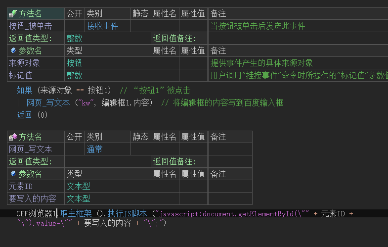
运行效果如下图：
按钮点击后编辑框的内容将会出现在网页编辑框中。
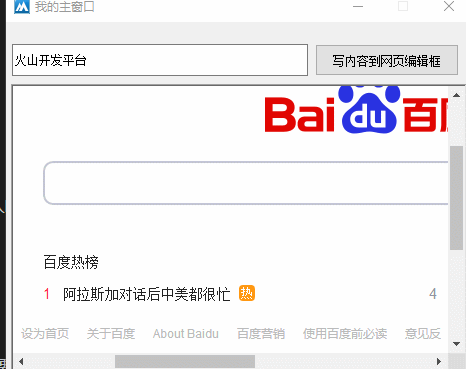
● 点击网页内容
准备如下所示的javascript代码：
javascript:document.getElementById("元素ID").click();
上述代码的作用可以点击指定网页元素。
代码编写如下图：
1、根据提供的javascript代码进行简单封装。
2、集合“网页_写文本”方法实现百度一键搜索。
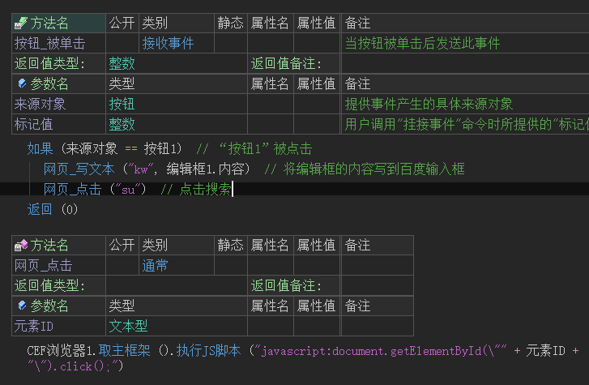
运行效果如下图：
按钮点击后编辑框的内容将会出现在网页编辑框中。
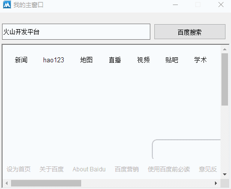